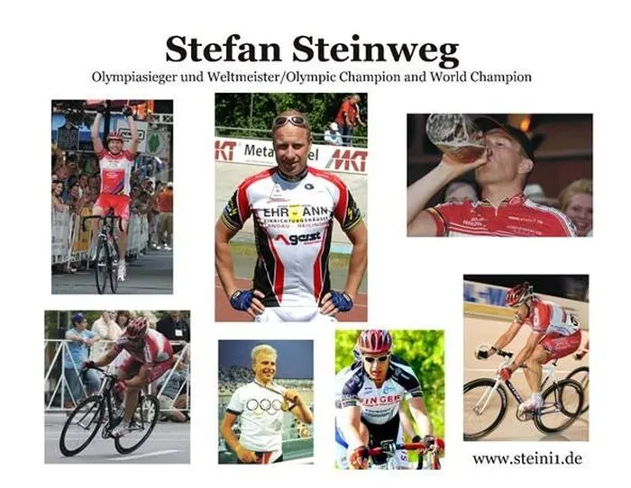
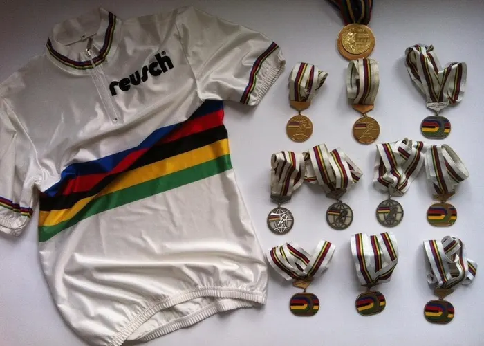
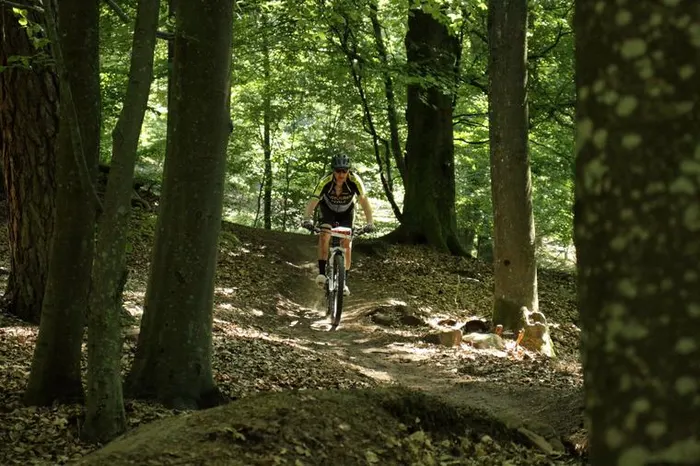
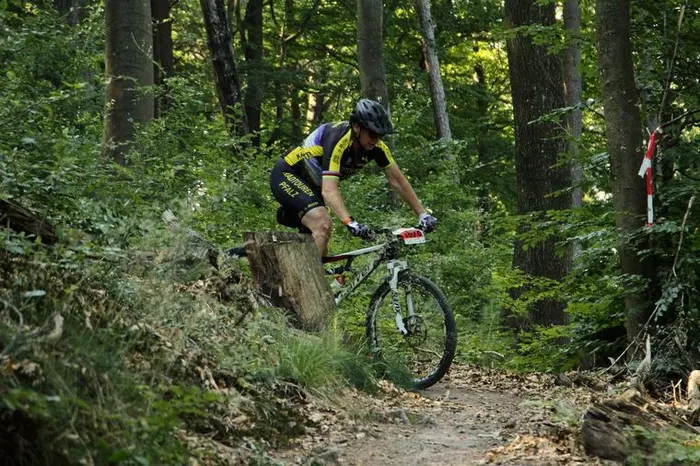
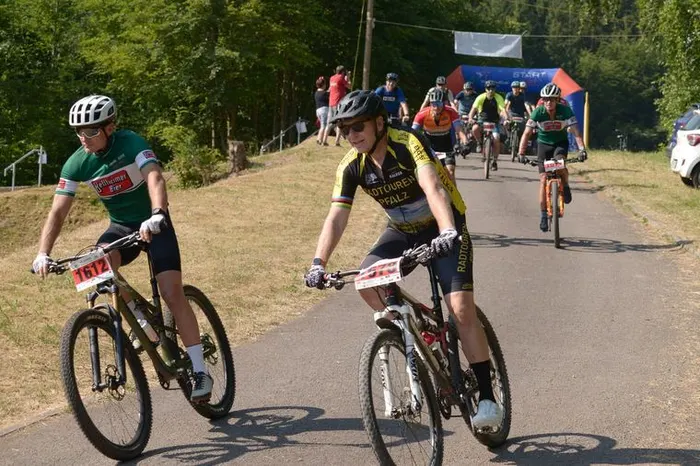
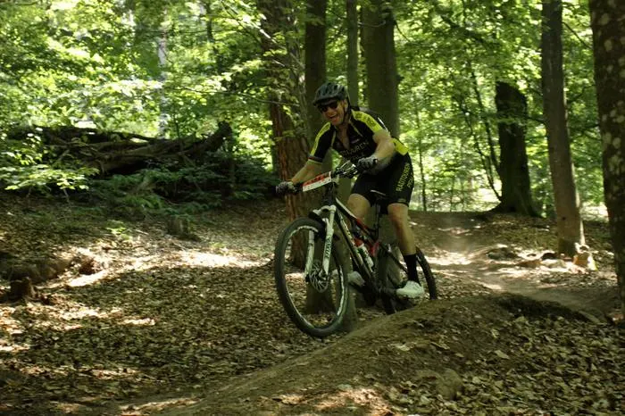
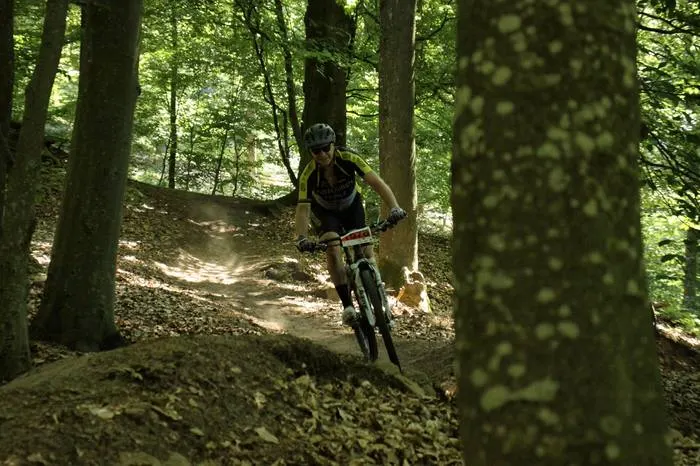
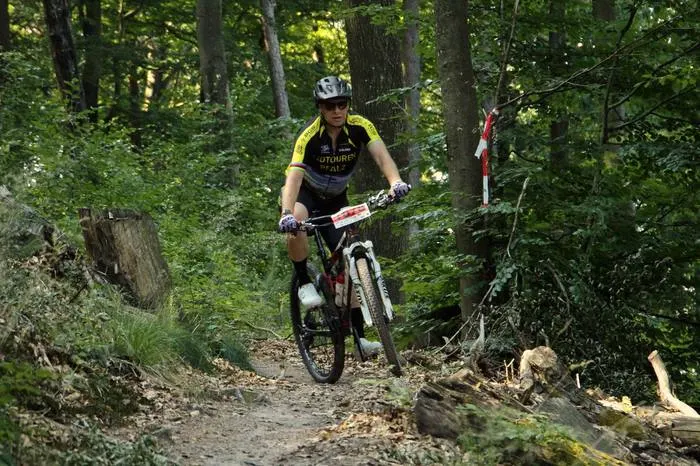

Wer ich bin
Ich bin Stefan Steinweg — ehemaliger Bahnradsportler mit einer Leidenschaft für Sechstagerennen. Mein Sport war die Mannschaftsverfolgung: vier Fahrer, eine Linie, 4000 Meter auf Zeit gegen eine andere Mannschaft.
1992 in Barcelona stand ich ganz oben auf dem Podest. Davor und danach folgten Weltmeistertitel, zehn Deutsche Meisterschaften und 75 Sechstagerennen quer durch Europa und die Welt.
Heute lebe ich in Wachenheim an der Weinstraße — und bin, statt auf der Bahn, lieber mit dem Mountainbike im Pfälzer Wald unterwegs.

Im Renneinsatz auf der Straße
Erfolge

Junioren-Weltmeister im Punktefahren
Jüngster Titel meiner Karriere — der Auftakt zu allem, was folgte.
Weltmeister, Mannschaftsverfolgung — Stuttgart
Weltmeister mit dem Bahnvierer auf heimischer Bahn.
Olympiasieger, Mannschaftsverfolgung 4000 m — Barcelona
Der größte Erfolg meiner Laufbahn: Olympiagold mit der Mannschaft.
Weltmeister, Zweier-Mannschaftsfahren — Manchester
Madison-Weltmeistertitel gemeinsam mit Erik Weispfennig.
10× Weltcup-Sieger & 10× Deutscher Meister
Konstanz über eine ganze Karriere hinweg.
Sechstagerennen, u. a. Sieg in Neukaledonien
Hallen voller Publikum, Nächte auf der Bahn — meine liebste Disziplin.
Werdegang
Team Singer — letzte aktive Jahre im Profiradsport.
Team Möbel Ehrmann — Karriereausklang im Mannschaftstrikot.
Wohnhaft in Deidesheim, Pächter einer Rebzeile im „Prominentenweinberg" der Lage Deidesheimer Paradiesgarten.
Berater bei Fahrrad XXL Kalker in Ludwigshafen am Rhein.
Zuhause in Wachenheim an der Weinstraße — mitten in der Pfalz, nah am Wald und am Wein.
Heute
Mountainbike
Touren im Pfälzer Wald
Geführte MTB-Touren durch eines der schönsten Mittelgebirge Deutschlands — organisiert und begleitet von mir.
Wettkampf
Höllenberg Trail-Trophy
Auch heute noch am Start: MTB-Marathons in der Region, zuletzt bei der Trail-Trophy in Spirkelbach.
Beratung
Fahrrad XXL Kalker
Als Berater tätig bei Fahrrad XXL Kalker in Ludwigshafen — Expertise aus dem Spitzensport direkt im Fachhandel.
Zuhause
Wachenheim a. d. Weinstraße
Pfälzer Wald, Weinberge und kurze Wege — die Bahn ist heute ein Trail.



Galerie
Ein Bild sagt mehr als tausend Worte — Eindrücke aus über drei Jahrzehnten Radsport und aktuellen MTB-Touren im Pfälzer Wald.



Charity Bike Cup
🚴 Gemeinsam für Kinder — jeder Euro zählt
Seit vielen Jahren bin ich beim Charity Bike Cup am Start — nicht nur, um in die Pedale zu treten, sondern vor allem, um Spenden für Kinder zu sammeln, die Unterstützung brauchen. Dieses Jahr habe ich dafür meine eigene Spendenaktion gestartet: Jeder gesammelte Euro fließt direkt in die Gesamtsumme des Charity Bike Cups und damit in wichtige Projekte für Kinder.
Ob groß oder klein — jeder Beitrag macht einen Unterschied. Ich freue mich, wenn ihr meine Aktion unterstützt oder mit Freunden und Familie teilt.